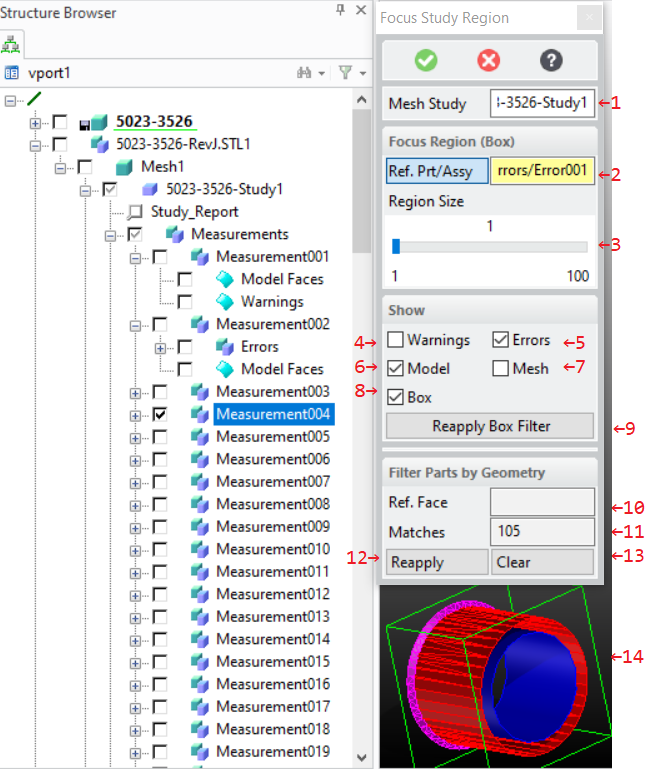
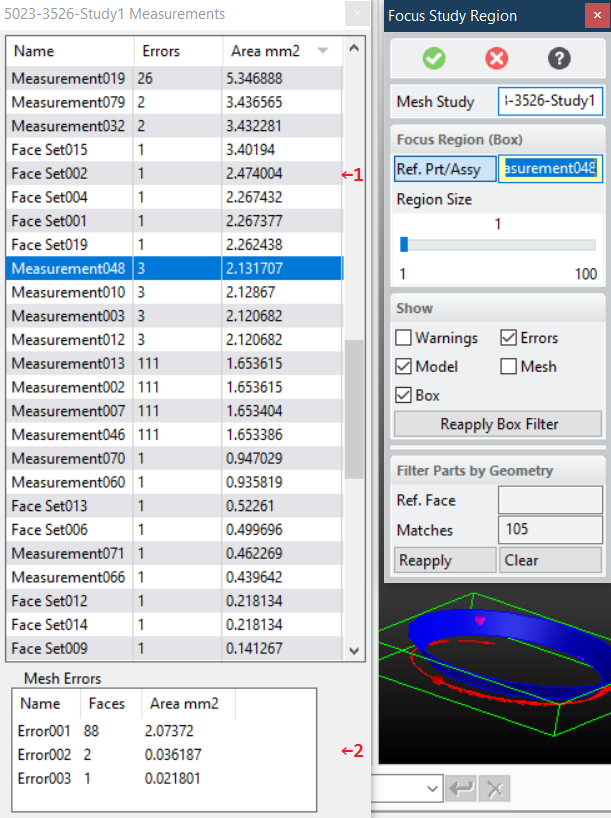
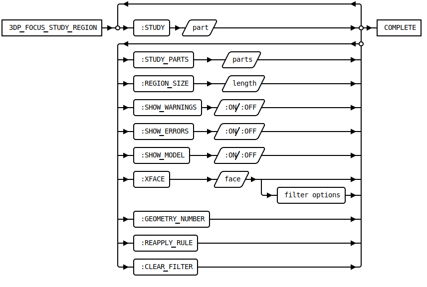

3DP_FOCUS_STUDY_REGION [Public Dialog]
Package: 3d-printing (Nick name(s): :3dp)
Focus on a region of a mesh quality study by showing only items in a specified region of interest (box) or with similar geometry.

The dialog offers two complementary approaches for filtering down the measurement to a manageable size:
- Bounding box based based filter. See options 2-9.
- Filter similar face geometry. See options 10-13.
While the dialog is active, both approaches can be used in an alternating way to interactively switch between box or geometry filtering.
It might be handy to also load the original CAD model for reference, but it is not required. The study contains a copy of all relevant faces from the CAD model.
Dialog Options
- A mesh study container generated by the dialog
3DP_MEASURE_MESH_QUALITY(Measure the quality of a mesh with respect to the part it was derived from). See option:STUDYbelow.
- Focus Region (By Box)
-
Use part or assembly boxes to focus on a region of interest.
- One or more parts or assemblies from the Measurements sub-assembly in the mesh
quality study container associated with a mesh.
The bounding box of the selected parts / assemblies define the region of interest
to focus on. You can use the structure browser for selection, pick, or use the
measurement browser (recommended). See the Measurement Browser section
for more details. All parts from the mesh quality analysis which fully lie in the region of interest
are drawn, all other parts are hidden. See option
:STUDY_PARTSbelow. Parts not contained in the region of interest are hidded (see illustration item 14 for an example). - The inflation amount for the region of interest. The amount is calculated by increasing the
bounding box up to the size of the entire measurement result.
This is used to add more context to your focus region.
See option
:REGION_SIZEbelow. - Display filter to show/hide warning facets. See option
:SHOW_WARNINGSbelow. - Display filter to show/hide error facets. See option
:SHOW_ERRORSbelow. - Display filter to show/hide error facets. See option
:SHOW_MODELbelow. - Display filter to show/hide the mesh. See option
:SHOW_MESHbelow. - Display filter to show/hide the feeback box of the region of interest.
See option
:SHOW_BOXbelow. - Re-apply the region-of-interest filter.
- One or more parts or assemblies from the Measurements sub-assembly in the mesh
quality study container associated with a mesh.
The bounding box of the selected parts / assemblies define the region of interest
to focus on. You can use the structure browser for selection, pick, or use the
measurement browser (recommended). See the Measurement Browser section
for more details. All parts from the mesh quality analysis which fully lie in the region of interest
are drawn, all other parts are hidden. See option
- Filter Parts by Geometry
-
Use geometric rules to focus on faces with similar geometry.
- A reference model face to be used as a template for finding faces with similar geometries. One a face has been selected geometry specific matching options appear.
- Show the number of matching geometries and to open the
Measurement Browser which is described in the next section.
See option
:GEOMETRY_NUMBERbelow. - Reapply the geometry filter. See
:REAPPLY_RULEbelow - Clear the geometry rule based filter.
The Measurement Browser
The measurements browser is activated by pressing the Matches button_ (see previous section). It shows measurement errors and warnings associated with model faces. Geometry filters, as described in the previous section, can be used to reduce the number of measurments shown in this dialog.

- List of measurements associated with model faces. Select individual measurement rows to show error details in the Mesh Errors pane (2) and focus on that measurement in the graphical display. The area column shows the accumulated area of the measurements error facets so that insignificant mesh errors (tiny face areas) can be detected quickly.
- List of mesh error parts of the measurement selected in (1). On selection the region of interest is set to the chosen error. The CAD model face and the associated facets are then shown in the graphical display. The area column shows the area of the individual groups of connected error facets so that insignificant mesh errors (tiny face areas) can be detected quickly.
Syntax

Options
:STUDY{container}- A study container generated by
3DP_MEASURE_MESH_QUALITY(Measure the quality of a mesh with respect to the part it was derived from). :STUDY_PARTS{part(assembly) list}- One or more parts or assemblies whose bounding boxes define the region of interest to focus on. All selected parts or assemblies must be members of the same study.
:REGION_SIZE{number}- Amount of additional inflation of the region of interest up to the size of the entire measurement.
:SHOW_WARNINGS{:ON | :OFF}- Show/hide facets which exceed the warning threshold.
:SHOW_MODEL{:ON | :OFF}- Show/hide faces of the CAD model.
:REAPPLY_BOX- Action to reapply the box filter with the current settings
:XFACE{face}- A reference model face to be used as a template for finding faces with similar geometries.
- Geomentric Filter Options
- Additional, geometry specific matching options to refine the filter.
:GEOMETRY_NUMBER- Opens the measurements browser.
:REAPPLY_RULE- Action to reapply the geometry rule filter with the current settings.
:CLEAR_FILTER-
Action to clear the geometry rule filter showing all measurements in the measurement browser.